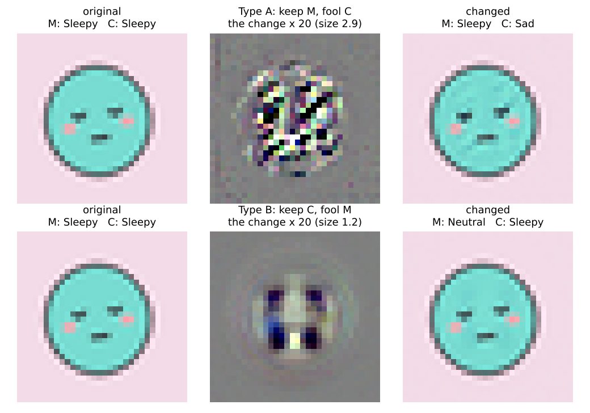

The zip holds four files. Keep them together in one folder:
double-agent-starter.ipynb, your notebookemoji_faces.py, which draws the facesagent_m.pthandagent_c.pth, the two trained agents
The Task
At a glance
- Time limit: your method must make all its changes in 5 minutes
- Baseline score: 0.000
- Our best so far: 0.844 on the practice faces, 0.820 on the test faces
- Hand in: one file,
submission-yourname.pt
Two Mood Machines have been trained on the same faces. Agent M is MoodNet, the network you built in Session 7. Agent C is MoodCNN, the convolutional network from the Olympiad page. On every face in this task, both agents are right, so they always agree.
Your job is to prove they don't see faces the same way. For every face, make two tiny changes to the pixels:
- Type A: after the change, Agent M is still right, but Agent C is wrong.
- Type B: after the change, Agent C is still right, but Agent M is wrong.
The changes should be so small that a person can't see them. Smaller changes score more.

Both changed faces look the same as the original. The middle pictures show each change 20 times stronger. The change that fools the CNN is a speckled texture. The change that fools MoodNet is a set of smooth blobs. The two networks have learned to look at different things.
The Faces
| Faces | How many | Use them to |
|---|---|---|
| Practice | 100 | try ideas and tune your method, as often as you like |
| Test | 100 | check your chosen method once, before the contest |
| Contest | 100 | the real score. Nobody sees them until the contest starts |
The notebook picks the practice and test faces for you. In the contest, your teacher gives out a number called FIRST_SEED, and the notebook draws 100 new faces from it. The real olympiad worked in the same way: contestants tuned on public images, and were marked on hidden ones.
The Rules
- Use the two agents as they are. Don't train them or change their weights.
- Each change has the same shape as a face,
3 x 32 x 32, and is added to the picture beforeprepare(the Normalize step). Colour values are then kept between 0 and 1. - Your method must handle all 100 contest faces, both types, in 5 minutes. The contest cell checks this.
- Your method has to work on any face. Don't tune it by hand for one face.
The Score
The pure score is the fraction of the 200 changes that work. The size of a change is how much a typical colour value moved, in brightness steps out of 255. The penalty factor shrinks your score as the average size grows:
penalty = 1.5 - 1 / (1 + e^(-0.2 x size))
final score = pure score x penalty
| Average size (steps out of 255) | 0 | 1 | 2.5 | 5 | 10 |
|---|---|---|---|---|---|
| Penalty factor | 1.00 | 0.95 | 0.88 | 0.77 | 0.62 |
A change that doesn't work still counts towards the average size. If your method fails on a face, send no change at all.
Real Task and Our Version
| IOAI 2026: Double Agent Dilemma | Double Agent Faces | |
|---|---|---|
| The two models | ResNet-18 (a CNN) and ViT-Tiny (a transformer) | MoodCNN and MoodNet |
| Pictures | photos from ImageNet, 1,000 classes | emoji faces, 10 moods |
| Faces to change | 100 practice, 100 public test, 200 hidden | 100 practice, 100 test, 100 contest |
| Computer | one large GPU | a school laptop |
| Time limit | 12 minutes | 5 minutes |
| Score | success times a penalty for size | the same, with size measured in brightness steps |
The real task asked contestants to split a CNN from a transformer. Our version splits a CNN from a network that flattens the picture. The idea and the method are the same.
Before You Start: The New Idea
In every session so far, the weights learned and the picture stayed the same. In this task it's the other way round. The agents' weights are frozen, and the change to the picture is the value that learns.
change = torch.zeros_like(picture, requires_grad=True) # the change learns
optimiser = torch.optim.Adam([change], lr=0.01) # Adam updates the change
You saw why this works in Session 9. loss.backward() finds the gradient for every value that has requires_grad=True. Make the change one of those values, and the gradient tells you which way to move every pixel to make the loss smaller.
So the trick is choosing a loss that is small when the agents disagree in the right way:
loss = F.cross_entropy(keep(changed), right) - F.cross_entropy(fool(changed), right)
The first part is small when the agent you keep is sure of the right mood. The minus sign means the second part helps when the agent you fool is far from the right mood. Going downhill does both at once.
Levels and Hints
Work through the levels in the notebook. Each one builds on the last. The scores are what our versions got on the practice faces, so you know if you're on track. Open a hint only when you're stuck, one at a time.
Level 1: Cover a Square (about 0.54)
No gradients yet. Paint a small square of the face in its own average colour, and test whether that splits the agents. Try every position and keep the smallest change that works.
Hint 1: where to start
Use three loops: one over square sizes (smallest first), one over top and one over left. Inside, build a change that is zero everywhere except the square. Then call works(picture, mood, keep, fool, change).
Hint 2: building the change
change = torch.zeros_like(picture)
patch = picture[:, top:top + side, left:left + side]
flat = patch.mean(dim=(1, 2), keepdim=True) # average colour
change[:, top:top + side, left:left + side] = flat - patch
flat - patch is what you add to turn the square into one flat colour.
Level 2: Let the Gradients Choose (about 0.61, then 0.68)
Fill in the four gaps in nudge. Each gap is something you've written before, in a new place. Then use the CHANGE ONE THING cell to try a smaller learning rate with more steps.
Hint 1: the four gaps
- The change has to learn, so it needs
requires_grad=True. - The loss is the
keeppart minus thefoolpart. - and 4. After
zero_grad()come the same two steps as every training loop since Session 8.
Hint 2: show the lines
change = torch.zeros_like(picture, requires_grad=True)
loss = F.cross_entropy(keep(changed), right) - F.cross_entropy(fool(changed), right)
loss.backward()
optimiser.step()
Think
Why does a smaller learning rate with more steps give a better score, when it fools the agents no more often?
Level 3: Make It Smaller (about 0.71)
When a change works, a fraction of it might work too. Halve the gap each time to find the smallest fraction that still works. This is the same search you'd use to guess a number between 1 and 100 in seven goes.
Hint 1: the search
Keep two numbers, low = 0.0 (no change, doesn't work) and high = 1.0 (the whole change, works). Try the middle. If change * middle works, it becomes the new high. If not, it becomes the new low. After 12 goes, high is very close to the smallest fraction that works.
Hint 2: show the loop
for attempt in range(12):
middle = (low + high) / 2
if works(picture, mood, keep, fool, change * middle):
high = middle
else:
low = middle
return change * high
Hint 3: nudge_then_shrink
Call nudge with steps=200, lr=0.002. If the result doesn't work, return torch.zeros_like(picture), because a failed change still adds to your average size. Otherwise return make_smaller(...) of it.
Level 4: Keep Squeezing (about 0.84)
Level 3 stops as soon as a change works. Level 4 keeps going. Every step, if the change works, remember it and use a loss that only makes it smaller. If it stops working, use the Level 2 loss to make it work again. At the end, keep the smallest change that worked.
Hint 1: two losses, one loop
Start from a copy of nudge, then delete the break. Inside the loop, use an if: when works(...) is True, loss = (change ** 2).sum(), which is smallest when every pixel change is 0. Otherwise, use the Level 2 loss.
Hint 2: remembering the best
Before the loop, set best = None. Inside the "it works" branch:
if best is None or size(change.detach()) < size(best):
best = change.detach().clone()
.clone() takes a copy. Without it, best would keep changing as change does.
Hint 3: the end of the function
If best is still None, nothing ever worked, so return torch.zeros_like(picture). Otherwise return make_smaller(picture, mood, keep, fool, best). Running Level 3's search at the end squeezes out a little more.
Level 5: Your Own Ideas
Our best is 0.844. Look at the faces where Type A fails: it's always harder to fool the CNN while keeping MoodNet right. Change one thing at a time, and write every attempt in the Experiment Log in the notebook.
- Give Type A more steps or a different learning rate than Type B. Inside your function,
keep is agent_mtells you it's Type A. - Weight the loss:
2 * F.cross_entropy(keep(...))protects the agent you keep;2 * F.cross_entropy(fool(...))pushes harder on the one you fool. - Push the agent you fool towards one particular wrong mood. Its second-highest score is a good choice.
- Change only part of the picture, such as the middle of the face.
Check the time as well as the score. A method that takes more than 5 minutes for 100 faces can't be entered.
Contest
- Pick your best method using the practice faces, and score it once on the test faces.
- Put your name and the contest
FIRST_SEEDinto the last cell of the notebook, and run it. - Hand in
submission-yourname.pt. Your teacher marks every file on the same contest faces and puts up a leaderboard.
The real olympiad worked in the same way. Contestants submitted notebooks, and the scores came from images they had never seen.
Why This Matters
Changes like these are called adversarial examples. A few invisible changes to a picture can make a network see something else entirely. Researchers have fooled road-sign classifiers with a few stickers, and face recognition with patterned glasses frames. Finding where two models disagree is one way engineers test how robust a model is, before it's trusted with anything important.
Credits
Adapted from Double Agent Dilemma, IOAI 2026 Individual Contest Task 4. The task was proposed by Tao Dajiang and developed by Tao Dajiang, Zhuldyz-Zhan Sagimbayev and Kamalkhan Artykbayev. The original task, data and hints are at github.com/IOAI-official/IOAI-2026, released under CC BY 4.0. Changes: new models, pictures, data sizes, time limit and size measure, plus new levels and hints.